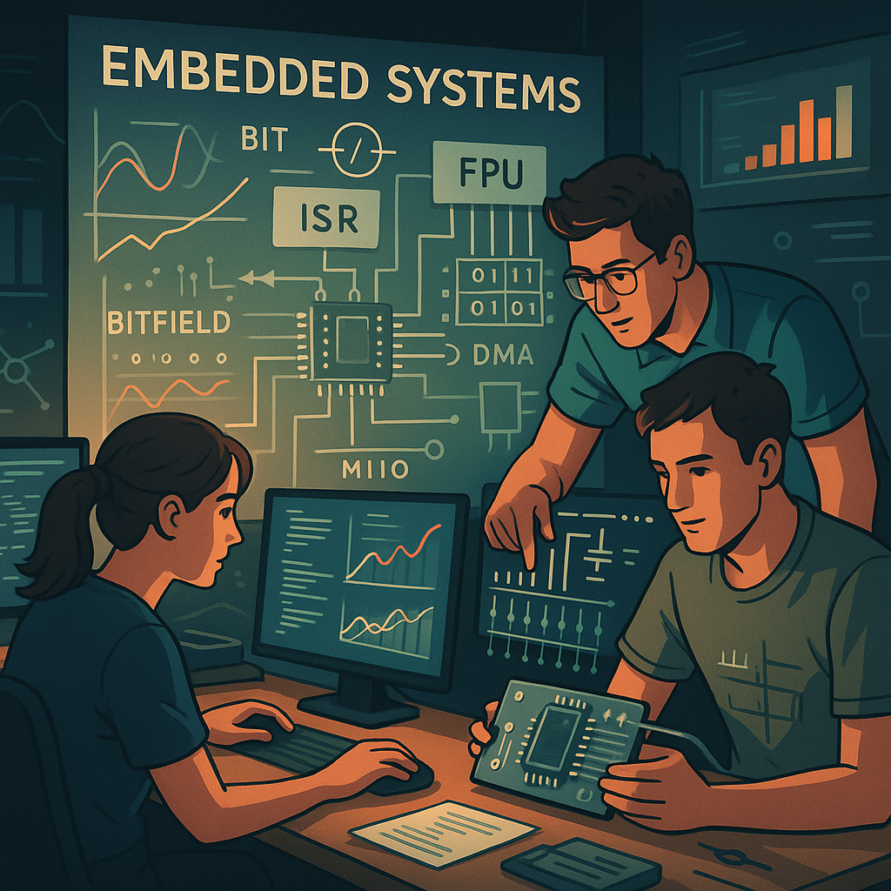
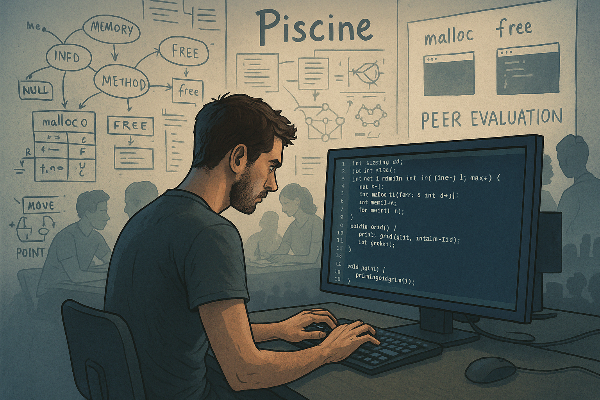
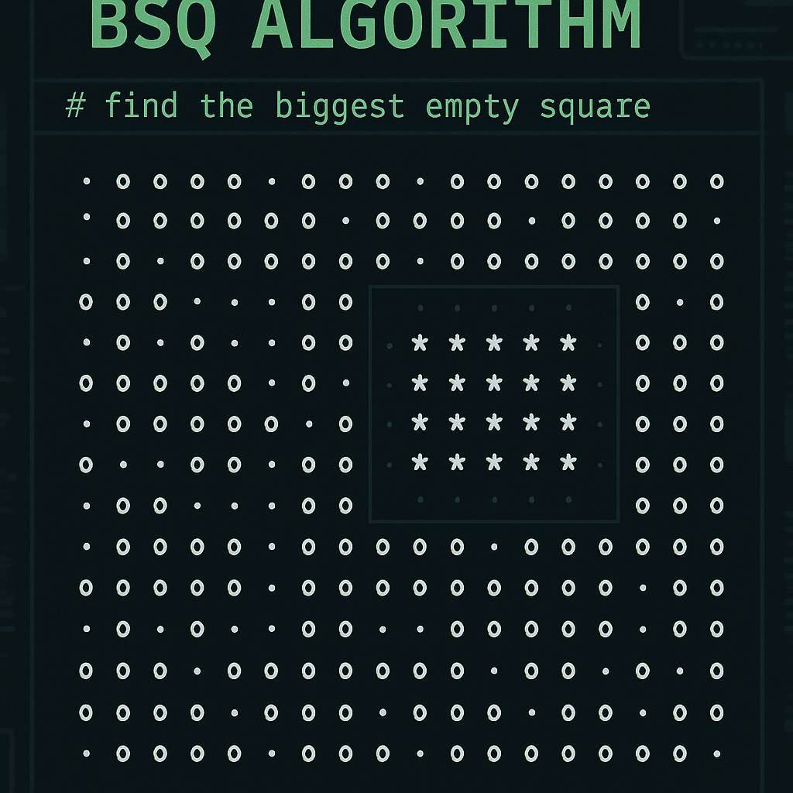
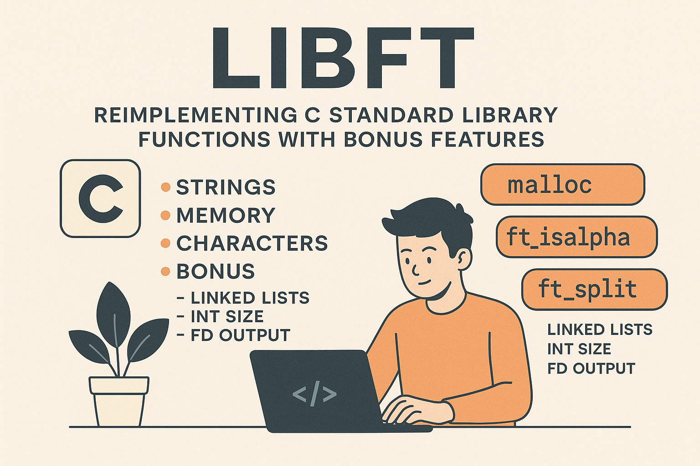
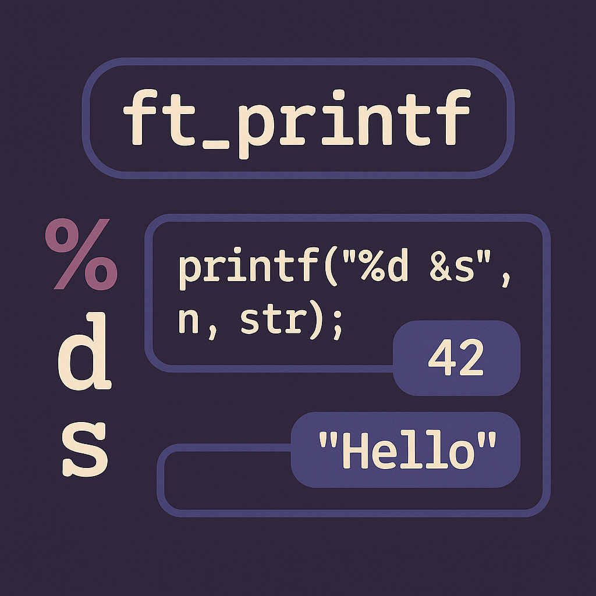
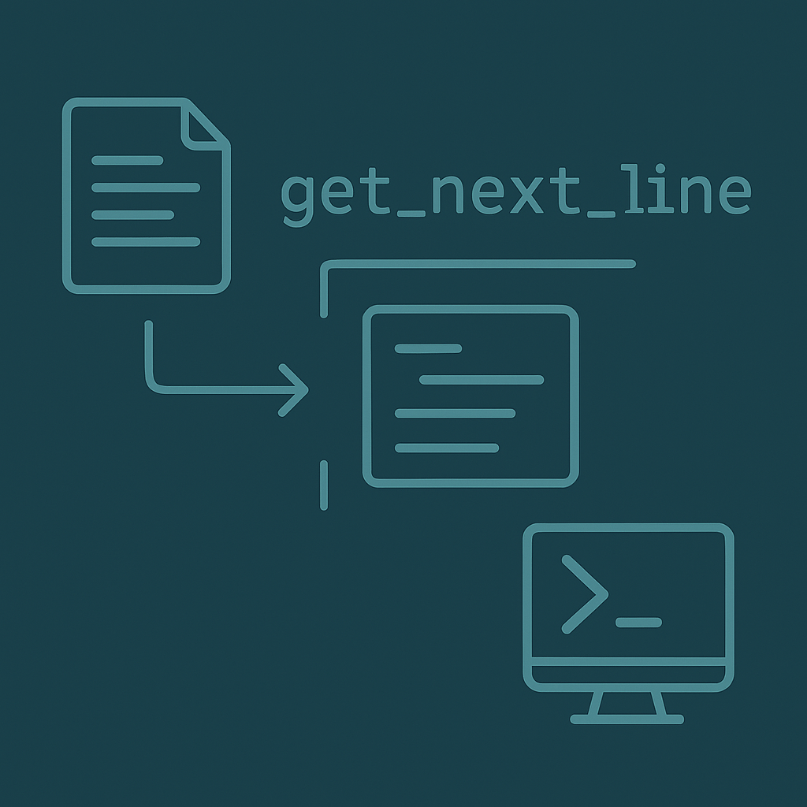

42 Türkiye, tamamen özgür ve proje tabanlı öğrenme modeliyle dünya genelinde tanınan bir yazılım
okuludur. Klasik eğitimin aksine, burada hiçbir ders veya öğretmen yoktur; yalnızca projeler,
araştırma ve işbirliği vardır. 42'de geçirilen zaman, gerçek dünyada yazılım geliştirici olmak için
gereken temel donanımı ve dayanıklılığı sağlar.
Benim için 42, sadece bir okul değil, disiplinli çalışma, sabır, problem çözme ve takım çalışması
gibi hayat boyu kullanacağım yetenekleri geliştirdiğim bir merkez oldu. Özellikle "Piscine" (havuz)
süreci, yazılım dünyasında kalıcı izler bırakacak bir tecrübe oldu.

Piscine, 42'ye kabul edilmek için geçirilen bir aylık zorlu öğrenme sürecidir. Günde 10–14 saatlik
yoğun kodlama, algoritmalar, C dili, Unix temelleri ve takım projeleri ile doludur. Temel amaç,
bireyin öğrenme yeteneğini ve problem çözme becerisini ölçmektir.
Süreç boyunca temel C programlama konseptleri, temel algoritmalar, hafıza yönetimi (malloc/free),
pointer'lar ve basit veri yapıları gibi konular üzerinde derinlemesine çalıştım. Ayrıca gün sonunda
yapılan peer-evaluation ve norminette standartlarına uygun kod yazma kültürü kazandım.

BSQ (Biggest Square), bir harita üzerinde en büyük boş kareyi bulmayı amaçlayan bir algoritma
projesidir. Verilen bir haritada boşluklar ve engeller işaretlenir, ve dinamik programlama
yaklaşımıyla en büyük kare alan tespit edilir.
Bu projede dosya okuma, veri işleme, algoritmik optimizasyon ve dinamik hafıza kullanımı konularında
tecrübe kazandım. Hataları yönetmek ve büyük veri kümeleriyle verimli çalışmak üzerine birçok
optimizasyon yaptım.

Libft, standart C kütüphanesinin önemli fonksiyonlarının yeniden yazılmasını kapsayan bir temel
projedir. Bu proje sayesinde `memset`, `strcpy`, `atoi`, `isdigit`, `strlen` gibi birçok temel
fonksiyonu sıfırdan ve memory-safe şekilde implement ettim.
Ayrıca bonus kısmında linked list veri yapıları, eklemeler, silmeler, iterasyonlar ve map
fonksiyonları geliştirdim. Kodun modülerliği ve güvenilir hafıza yönetimi açısından kendimi ileri
taşıdım.

ft_printf projesi, C standardındaki `printf` fonksiyonunun özelliklerini taklit eden, kendi
formatlayıcı fonksiyonumu geliştirdiğim ileri seviye bir projedir. `%d`, `%s`, `%c`, `%x`, `%p`,
`%u` gibi format specifier'ları başarıyla işleyen bir yapı geliştirdim.
Bu proje ile string parsing, variadic functions (`va_list`, `va_start`, `va_end`) kullanımı, hafıza
yönetimi ve hata kontrolü konularında önemli deneyimler edindim.

get_next_line projesi, bir dosyadan satır satır veri okumak için efektif bir fonksiyon geliştirme
hedefi taşır. Her çağrıda bir sonraki satırı döndürür ve dosya sonuna ulaşıldığında NULL döner.
Bu proje ile buffer yönetimi, static değişken kullanımı, hafıza sızıntılarını önleme ve sistem
çağrıları (`read`) gibi alçak seviyeli işlemleri deneyimledim. Hızlı ve güvenilir veri yönetimi için
önemli teknikler öğrendim.